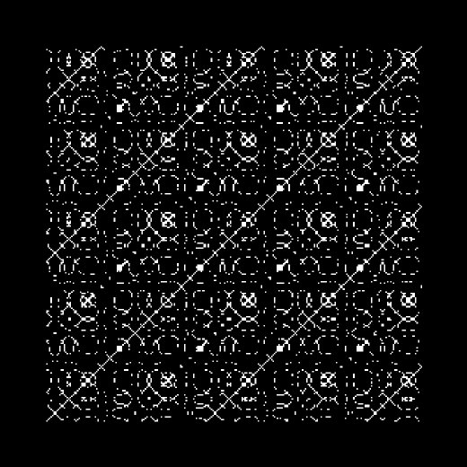
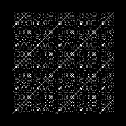
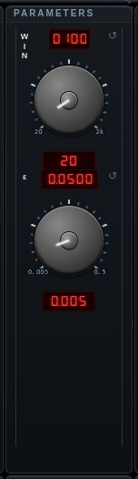

#recurrence


Recurrence Plot — the picture of when a signal returns to where it has already been (J.-P. Eckmann, S. O. Kamphorst and D. Ruelle, "Recurrence Plots of Dynamical Systems", 1987). Time runs along both axes, and the cell (i, j) is lit when the two samples are within ε of each other, so the main diagonal is always lit and everything else says how the signal repeats. A steady tone draws unbroken diagonals spaced by its period; a chaotic or noisy source breaks them into short segments; a held sound is a solid block, and the instant the source changes is an edge running across the square. SRC picks what is being plotted: audio is the raw samples, embed is the Takens delay vector (s, s−τ, … s−(m−1)τ) of that same audio — the reconstructed phase space a recurrence plot is properly defined on, which removes the anti-diagonals a scalar signal shows because sin t equals sin(T/2 − t) — and traj is the most recent attractor's own trajectory, the way the Bifurcation explorer picks its system. τ is the Takens mode's own τ knob, so its MEAS button measures the delay for this plot too, and m is the embedding dimension. WIN is how much history the square covers: milliseconds for the audio sources, tenths of that in the system's own time units for a trajectory. ε is the threshold as a fraction of the source's scale — full scale for audio, the attractor's own diameter for a trajectory, which is what makes one default readable across systems that differ in width by fifty times. It is never taken from the current level, deliberately: a threshold that follows the music makes the plot's density pulse with it instead of describing it. RQA reads the picture back as three numbers — RR, the percentage lit and the number to turn ε by; DET, the share of that lying on diagonals, which is what separates a system from noise; and LAM, the share on verticals, which is states it sat in rather than passed through. Drawn as a texture on a square plane in the same 3-D pipeline as every other model.
Open Recurrence Plot in chaosrack →It opens running, on the model selector, with its own knobs. Rotate it by dragging, zoom with the wheel, and turn the parameters to see what the figure does when the system changes.